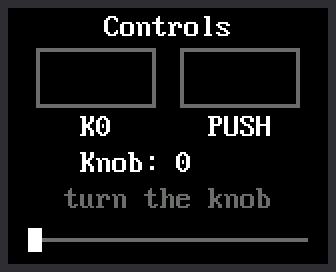

Lab 07: Controls on the Screen

Labs 04, 05, and 06 tested the controls one at a time, with words in the Thonny shell. This lab puts all three on the screen at once, so you can watch the kit react to your hands.
| What you do | What the screen does |
|---|---|
| Hold down K0 | The K0 box fills with green |
| Press the knob down | The PUSH box fills with yellow |
| Turn the knob | The number counts the clicks, and the white marker slides |
Welcome to Lab 07
 This is the first time the screen answers your hands, and every later
clock works the same way. You will also teach the Pico to keep count
of the knob, even when you spin it fast. Let's make time tick!
This is the first time the screen answers your hands, and every later
clock works the same way. You will also teach the Pico to keep count
of the knob, even when you spin it fast. Let's make time tick!
What You Will Learn
- what an interrupt is, and why the knob needs one
- why the two buttons get by without one
- why an interrupt function should be short
- how to redraw only what changed on the screen
Run It
- Open
07-controls-display-test.pyin Thonny and click Run. - Hold down K0, the square button. Its box fills with green until you let go.
- Press the knob straight down. The PUSH box fills with yellow.
- Turn the knob one click clockwise. The number goes up by one and the marker moves one notch right. Turning back does the opposite.
- Spin the knob fast. In lab 06 that printed
missed a step. This time the count keeps up.
The Thonny shell keeps a log of everything you do:
1 2 3 4 5 6 7 8 9 10 | |
A Doorbell for the Knob
In labs 04 to 06, a loop looked at the pins over and over. This loop has drawing to do, and it rests between trips. It comes around only about 50 times a second. A knob step that comes and goes between two looks would be lost.
Think about waiting for a friend to visit. You could walk to the door every minute and look outside. A short visit between two looks would be missed. A doorbell is better. It tells you the moment someone arrives.
An interrupt is a doorbell for a pin. You ask MicroPython to call one of your functions by itself, the moment the pin changes. It does not matter what the loop is doing right then.
1 2 | |
a.irq(...)puts a doorbell on A, one of the knob's two switches. The second line does the same for B.irqis short for interrupt request.knob_movedis the function to call when the bell rings.- The last part says when to ring: when the pin rises to 1, and when it falls to 0. That is every change.
You may have met irq() in
chapter 6 of Learning MicroPython,
where it counted button presses.
K0 and PUSH need no doorbell. A press lasts far longer than one trip around the loop, so the loop always catches it.
Count Fast, Draw Later
Here is the function the doorbell calls. It is the counting code from lab 06, moved into a function:
1 2 3 4 5 6 7 8 9 | |
global steps, lastlets the function change two variables that were made outside it.nowis which of the four positions A and B are in, from 0 to 3.lastis where they were the time before.moveis how far around that loop of four the knob went. A 1 is one step clockwise. A 3 is one step back.
The main loop turns steps into clicks, two steps to a click, as in
lab 06.
Notice What Is Missing
 Look at what
Look at what knob_moved() does not do: it draws nothing and prints
nothing. An interrupt cuts in on the rest of your program, so its
function should write down a number and leave. The slow job of
drawing waits for the main loop.
Only Draw What Changed
The main loop checks both buttons each time around. These lines, part of the program, run once for each button:
1 2 3 4 | |
downisTruewhile the button is pressed. A pressed button reads 0, as lab 04 showed.held[i]remembers what that button's box shows right now.- The
ifis true only at the moment those two differ. Only then is the box painted.
Hold K0 for ten seconds and its box is painted once, not 500 times. Every lab after this one follows the same rule: redraw only what changed.
Try This
- In
BUTTONS, near the top of the program, changeconfig.GREENtoconfig.RED. Which box changes color? - Change
NOTCHES = 20toNOTCHES = 10. How many clicks does the marker need to cross the track now? - Change the last line,
time.sleep_ms(20), totime.sleep_ms(500). The loop now looks only twice a second, so it misses some quick taps of K0. Spin the knob. The number waits, then jumps to the right count, because the interrupt kept counting. Change the line back to 20.
If It Doesn't Work
- A box never fills. That control is not reaching its pin. Run lab 04 again for K0, or lab 05 for PUSH.
- The number counts the wrong way, or not one per click. Lab 06
shows what to fix in
config.py. - The screen stays blank. Go back to lab 03 and get the display working first.
The Screen Answers Back!
 You gave the knob a doorbell with
You gave the knob a doorbell with irq(), kept its interrupt
function short, and redrew only what changed. Next comes a quick
test of the light inside the screen.